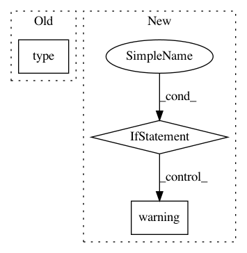

2aefb30ce63147205d8d8b0ccc1d4387a413221b,mvpa2/misc/surfing/volgeom.py,,from_any,#Any#Any#,448
Before Change
if mask_volume:
mask_volume_index = mask_volume if type(mask_volume) is int else 0
if type(s) is str:
return from_any(nb.load(s), mask_volume)
try:
After Change
ndim = len(data.shape)
if ndim <= 3:
mask = data
if mask_volume > 0:
warning("There is no 4th dimension (t) to select %d-th volume."
% (mask_volume,))
else:
mask = data[:, :, :, mask_volume]
else:
mask = None
In pattern: SUPERPATTERN
Frequency: 3
Non-data size: 3
Instances
Project Name: PyMVPA/PyMVPA
Commit Name: 2aefb30ce63147205d8d8b0ccc1d4387a413221b
Time: 2012-09-07
Author: debian@onerussian.com
File Name: mvpa2/misc/surfing/volgeom.py
Class Name:
Method Name: from_any
Project Name: NeuroTechX/moabb
Commit Name: 8dd6bfb7e3de0c6106f0fb8dff5579b96e1c03f0
Time: 2019-02-01
Author: vinayjayaram13@gmail.com
File Name: moabb/analysis/__init__.py
Class Name:
Method Name: analyze
Project Name: Microsoft/nni
Commit Name: e6ef08f367e0389e811d63eaa5afb16183a19e2b
Time: 2020-08-24
Author: 40699903+liuzhe-lz@users.noreply.github.com
File Name: src/sdk/pynni/nni/compression/tensorflow/compressor.py
Class Name:
Method Name: _locate_layers